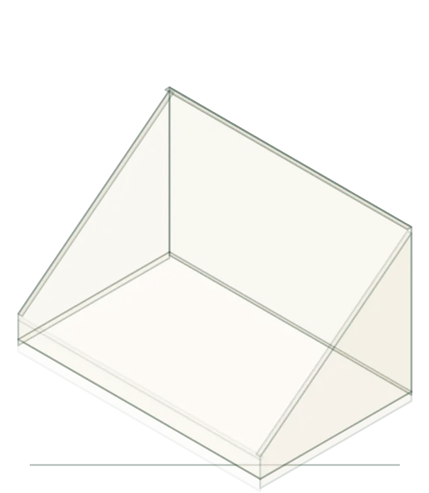

Preview · Custom Display Boxes
Both hook to the counter unit already named in the §Retail-Ready set-up strip (15 s tray · 90 s counter · 8 min floor stand). Nothing here is final — it's a throwaway page for you to pick from.
The drawing sits on the forest ground the page already uses for §Load & Stability, with the build rail beside it. This is the most legible version, and the one that would carry the claim. Cost: the page gains a third drawn module, against the one-per-page rule.
The same animation at roughly half size, sitting directly beneath the 15 s / 90 s / 8 min strip that is already on the page. No new band, no new heading — it just gives the 90 s figure somewhere to be seen. Cheapest change, smallest footprint.
…the ledger rows sit above this in the real page. Shown here only for context.
Set-up time by construction
This is option 2 rendered for real — the identical drawing, captured frame by frame and stitched into an animated WebP on R2. Same content, one <img>, works in email and decks. Trade-off: it is a fixed-size bitmap, so it softens on retina, and any copy change means re-rendering.
